Documentazione
Point Of Interest - Luoghi Shakespeariani
Il progetto permette di visualizzare su una mappa i luoghi presenti in varie opere di Shakespeare e di consultare degli articoli che spiegano l'opera ed il luogo.
- Classe/Anno: 5C INF - 24/25
- Autori: Luca Avveduto, Simone Cecire, Simone Cinquetti
- Creato: 16 dicembre 2024
- Ultima modifica: 20 gennaio 2025
Architettura informazione
Di seguito l'architettura dell'informazione del progetto.
- Titolo
- Luogo (ambientazione)
- Anno di pubblicazione
- Epoca
- Soggetto (descrizione dell'opera e del luogo)
- Immagini (con didascalia)
- Personaggi principali
UML
Di seguito sono presenti i vari diagrammi UML.
Diagramma di Casi d'uso
Diagramma di casi d'uso non previsto.
Diagrammi di oggetti
Qui è inserito il diagramma di oggetti.
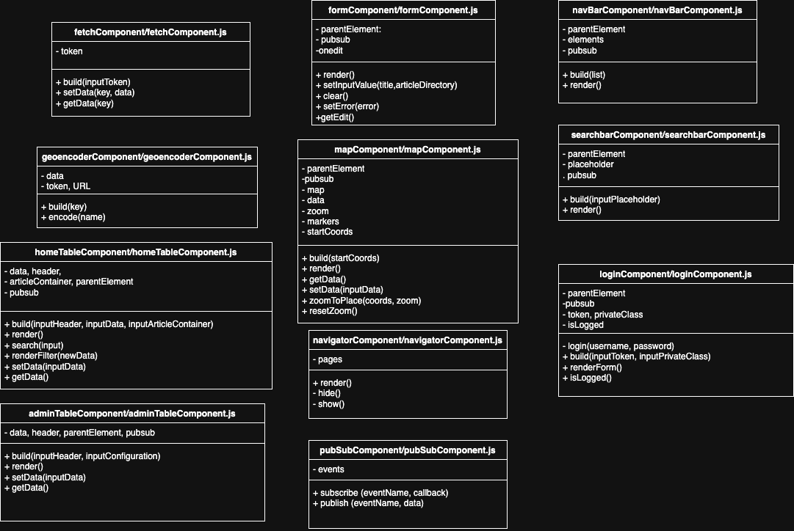Diagrammi di Stato
Qui sono inseriti i diagrammi di stato.
Stato Home-Dettaglio
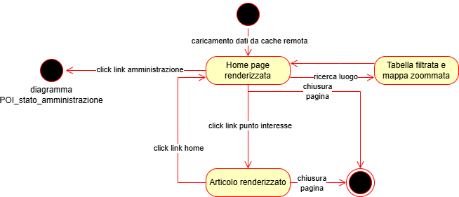Stato Amministrazione
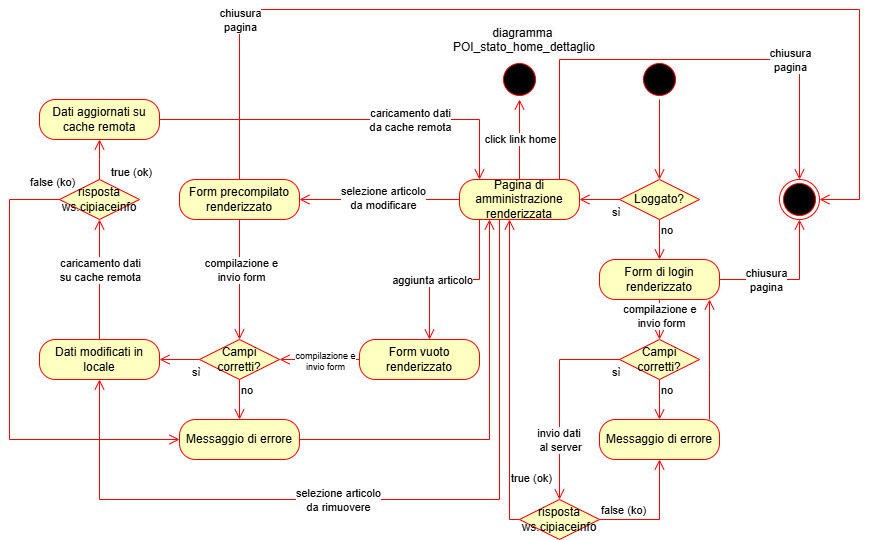Diagrammi di Sequenza
Qui sono inseriti i diagrammi di sequenza.
Sequenza Home-Ricerca
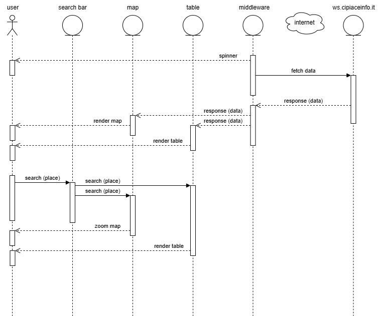Sequenza Dettaglio
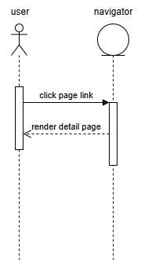Sequenza Login
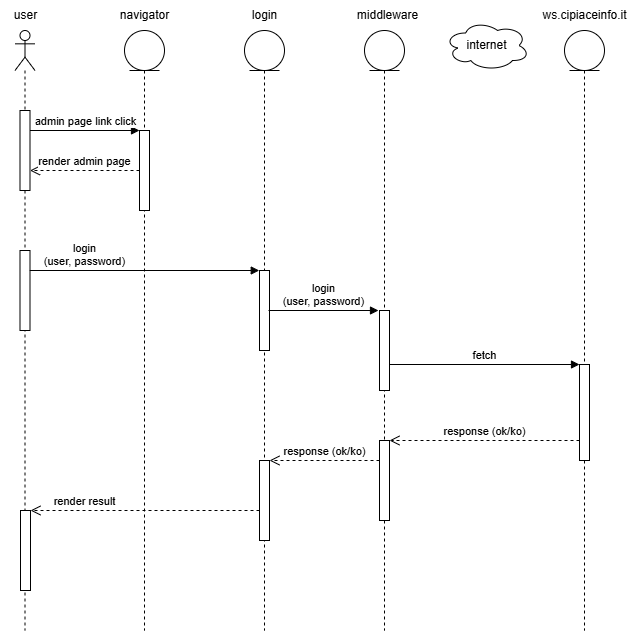Sequenza Aggiunta
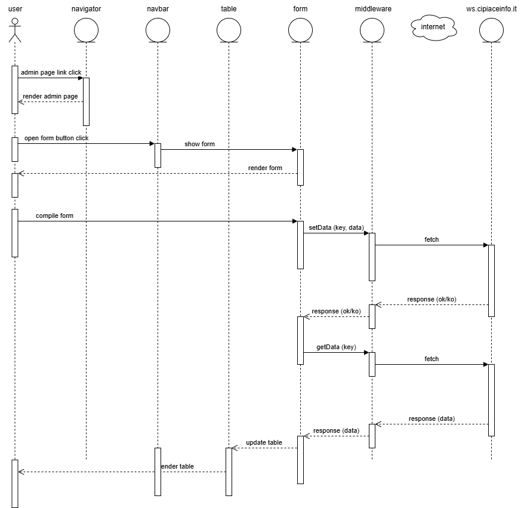Sequenza Modifica
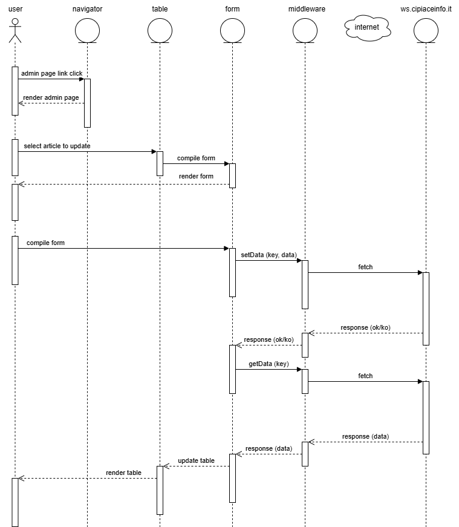Sequenza Rimozione
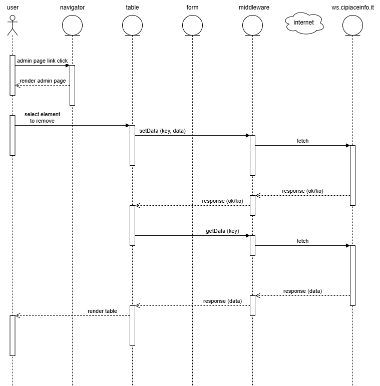Contenuti del progetto
In questa sezione sono inseriti i contenuti:
Wireframes
In questa sezione sono presenti wireframe e storyboard.
Tutti i wireframe
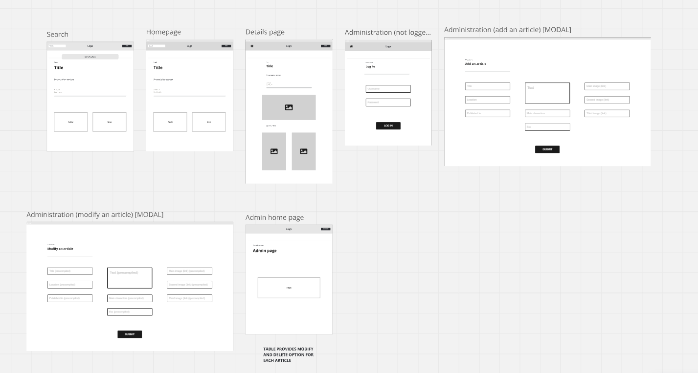Lo storyboard
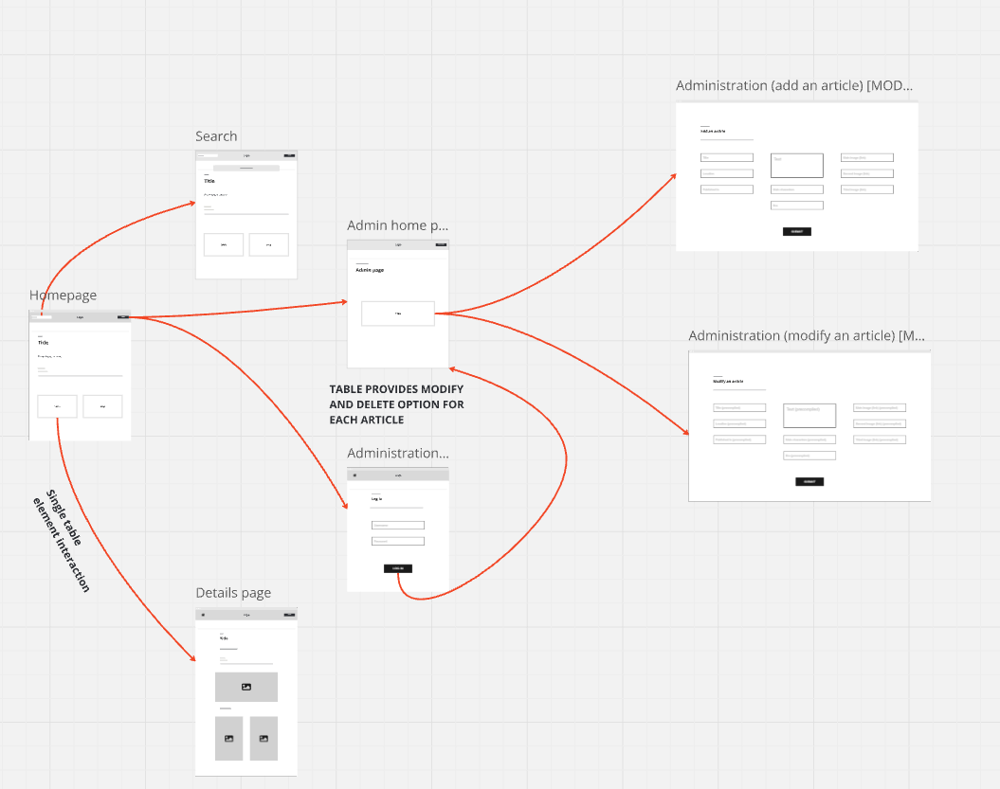Il progetto
Il progetto permette di visualizzare su una mappa i luoghi presenti in varie opere di Shakespeare e di consultare degli articoli che spiegano l'opera ed il luogo.